요 결정 (Urine Crystals)
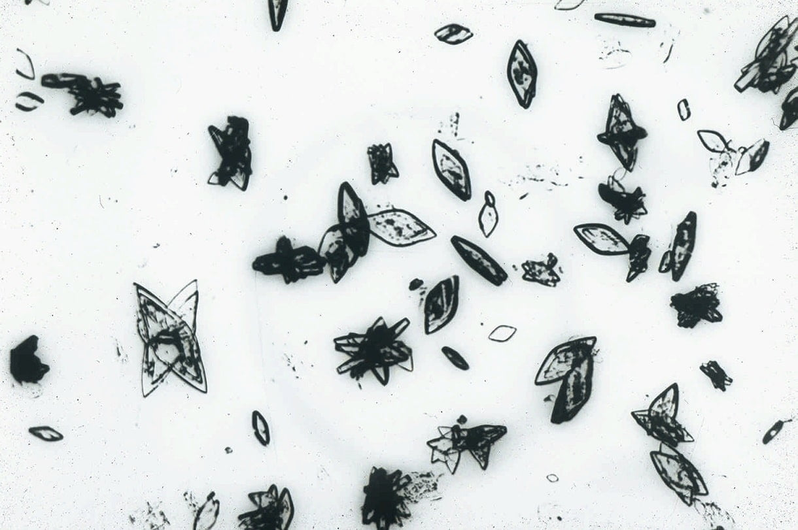
요산염 (Urate)
pH: 산성 (Acidic)
다양한 크기와 모양(통, 장미, 마름모 등)을 보이며 주로 호박색을 띱니다. 알칼리성 소변에서는 용해됩니다.
임상적 의의:
요산 결석증, 급성 요산 신병증을 시사하나 정상인에서도 관찰될 수 있습니다.
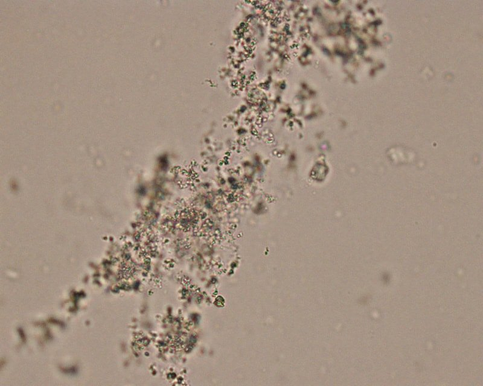
무정형 요산염 (Amorphous Urate)
pH: 산성 (Acidic)
산성 소변에서 관찰되는 무정형 결정으로, 현미경 상에서 미세한 과립 형태로 보입니다. 냉장 보관 시 핑크색 침전물("Brick dust")을 형성할 수 있습니다.
임상적 의의:
주로 병적 의의는 낮으나, 다량 발견 시 요산 대사 이상 또는 농축된 소변을 시사할 수 있습니다. 알칼리성 소변의 무정형 인산염과 유사하게 보입니다.
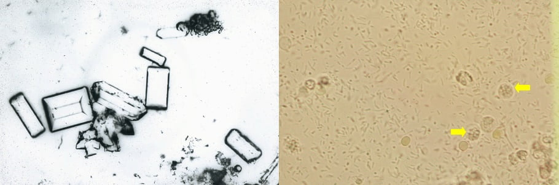
삼중인산염 (Struvite)
pH: 알칼리성 (Alkaline)
전형적인 "관 뚜껑(Coffin-lid)" 모양의 직사각형 프리즘 형태입니다. 마그네슘 암모늄 인산염으로 구성됩니다.
임상적 의의:
요소 분해 세균(Proteus 등)에 의한 요로 감염(UTI) 및 감염석(Infected calculi)과 관련이 깊습니다.
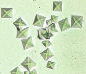
옥살산 칼슘 (Ca Oxalate)
pH: 산성~중성
이수화물: 무색의 "편지봉투" 모양.
일수화물: 덤벨, 타원형 모양.
일수화물: 덤벨, 타원형 모양.
임상적 의의:
시금치 등 옥살산이 풍부한 음식 섭취 시 정상적으로도 보이나, 결석증 또는 에틸렌 글리콜 중독 시 다량 관찰됩니다.
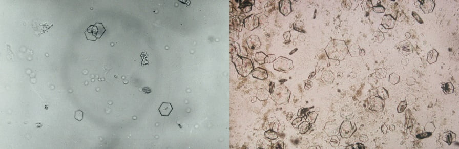
시스틴 (Cystine)
pH: 산성 (Acidic)
무색의 육각형 판 모양(벤젠 고리 유사). 두께가 다양하며 층층이 쌓여있기도 합니다.
임상적 의의:
유전성 대사 질환인 시스틴뇨증(Cystinuria)을 진단하는 결정적인 소견입니다.
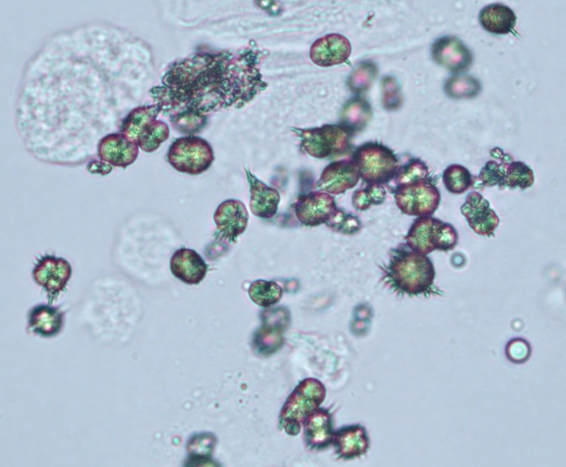
중요산 암모늄
pH: 중성~알칼리성
황갈색의 구형에 불규칙한 돌기("Thorn-apple")가 나 있는 모양입니다.
임상적 의의:
오래된 소변에서 보일 수 있으나, 신선뇨라면 간 질환이나 문맥전신단락(PSS)을 의심할 수 있습니다.
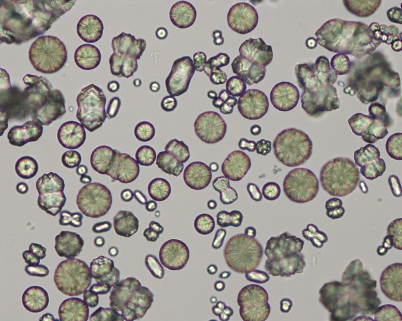
탄산 칼슘 (Ca Carbonate)
pH: 알칼리성
다양한 크기의 구형, 타원형 모양이며 종종 방사형 줄무늬가 보입니다. 황갈색을 띱니다.
임상적 의의:
말, 토끼 등 초식동물에서는 정상이나, 개나 고양이에서는 드뭅니다.
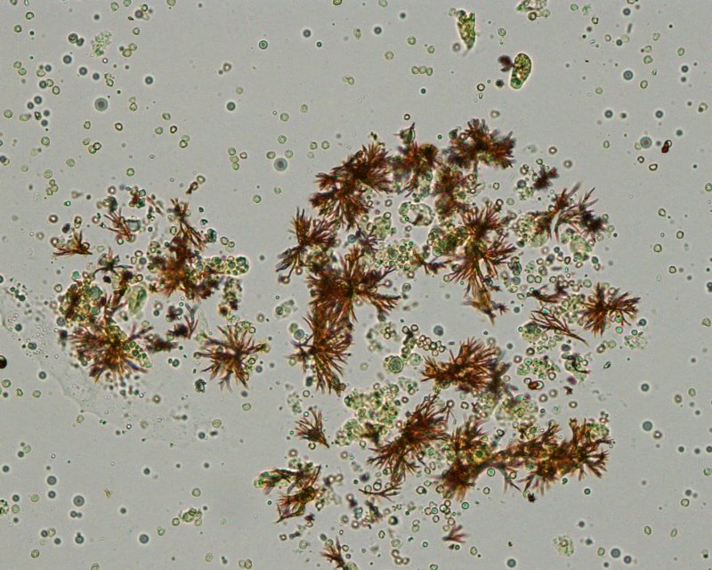
빌리루빈 (Bilirubin)
pH: 산성
붉은 오렌지색의 뾰족한 바늘 모양이 뭉쳐 있거나 과립 형태입니다.
임상적 의의:
간 질환, 담관 폐쇄 등 담즙 정체 질환을 강력히 시사합니다. (개에서는 소량 정상 가능)
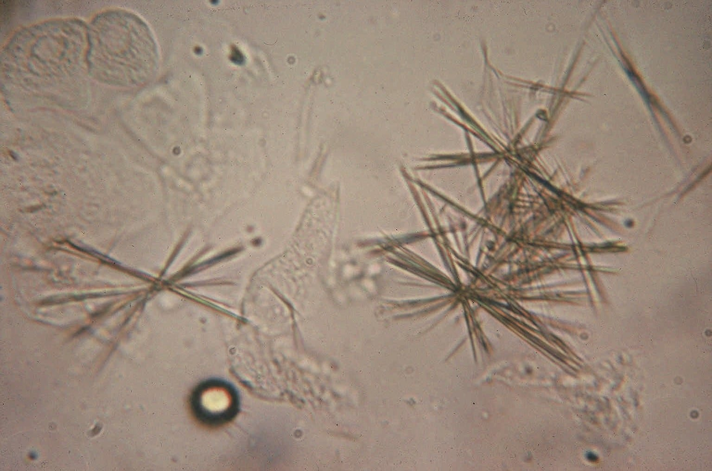
약물 결정 (Sulfadiazine)
pH: 산성
설파제 복용 시 나타날 수 있으며, "밀단(Shocks of wheat)" 모양이나 조개껍질 무늬를 띱니다.
임상적 의의:
약물에 의한 신세뇨관 손상 및 신부전 가능성을 경고합니다.
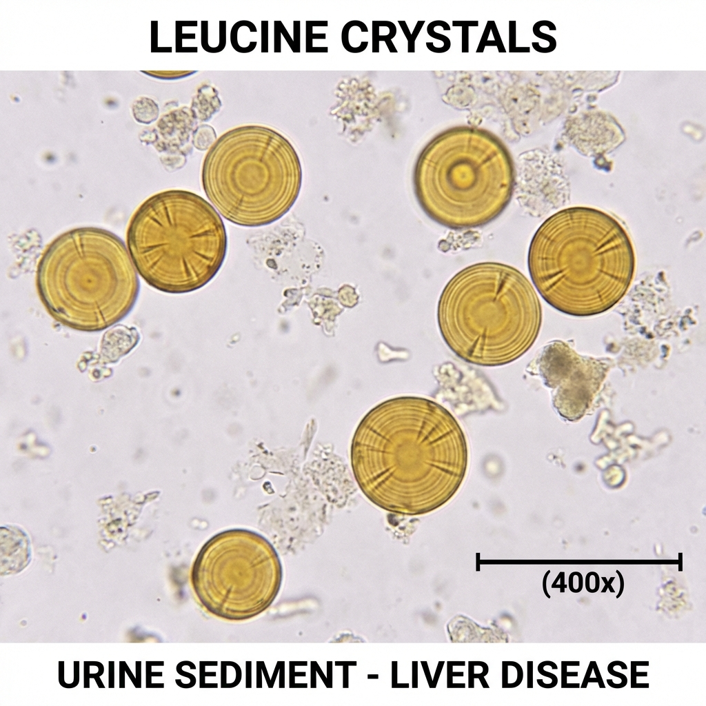
류신 결정 (Leucine)
pH: 산성
황갈색의 구형 결정으로, 특징적인 동심원 줄무늬(Concentric striations)와 방사형 무늬가 있습니다. 기름진 외관을 보입니다.
임상적 의의:
심각한 간 질환(Liver disease), 간성 혼수, 또는 아미노산 대사 장애를 강력히 시사합니다. 매우 드물게 관찰됩니다.
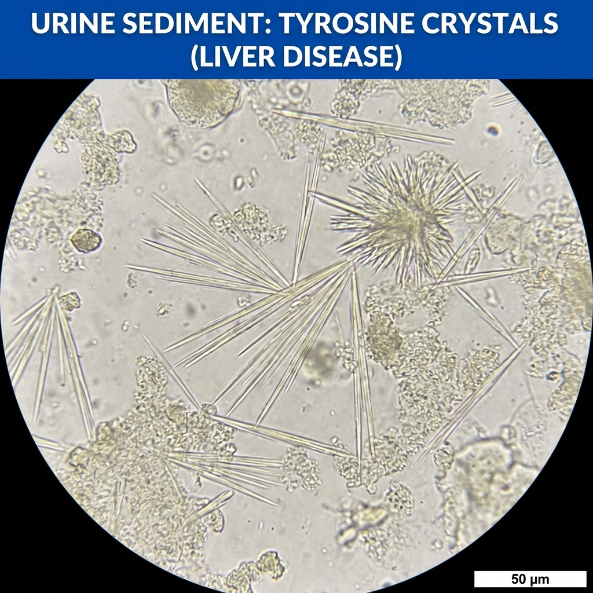
타이로신 결정 (Tyrosine)
pH: 산성
무색~황색의 가늘고 긴 바늘 모양 결정이 묶음(Sheaves) 또는 장미꽃(Rosette) 형태로 배열됩니다.
임상적 의의:
Leucine 결정과 함께 간 질환(Liver disease)을 강력히 시사합니다. 타이로신혈증(Tyrosinemia)에서도
관찰됩니다.
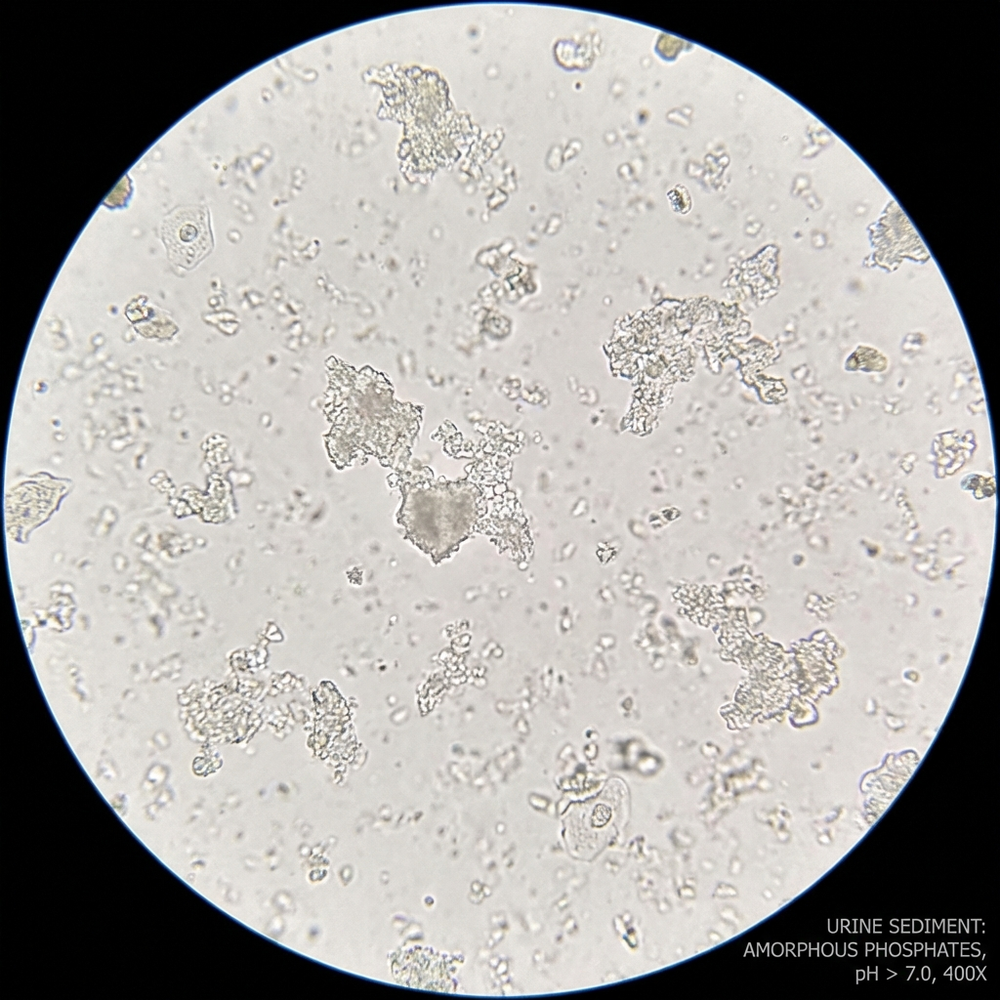
무정형 인산염 (Amorphous Phosphate)
pH: 알칼리성, 산성
뚜렷한 형태 없이 미세한 과립 형태로 응집되어 보입니다. 산성 소변의 무정형 요산염과 혼동될 수 있습니다.
임상적 의의:
일반적으로 임상적 의의가 낮으며, 알칼리성 소변에서 흔하나 드물게 산성에서도 관찰될 수 있습니다.